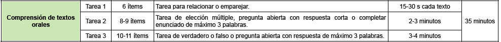
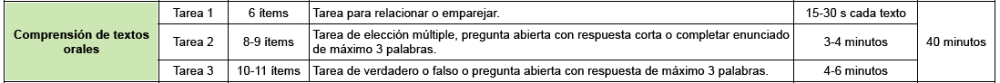

🎧 CTO - Listening
Estrategia de examen
| 🟢 B1 | 🔵 B2 |
|---|---|
 |
 |


| Tipo de tarea | En qué consiste | Consejo específico |
|---|---|---|
| Task 1 | 1. Multiple matching Relacionar varios hablantes con varias afirmaciones | Escuchar hasta el final antes de decidir: la respuesta correcta a veces se confirma solo al final del turno de cada hablante |
| Task 2 | 2. Note/sentence completion Completar huecos con la palabra exacta que se oye 2. Multiple choiceElegir la opción correcta entre 3-4 |
- Prestar atención a la gramática del hueco (singular/plural, tiempo verbal) para no escribir una palabra que no encaja - Las opciones incorrectas suelen mencionarse en el audio pero con una palabra que cambia el sentido (no, actually, but) |
| Task 3 | 3. True/False/Not mentioned Decidir si una afirmación es verdadera, falsa o no aparece | No dar por falso algo que simplemente no se menciona: son categorías distintas |
ESTRATEGIA
- ANTES de escuchar
- Leer las preguntas con antelación, durante el tiempo que se da antes de cada audio. Esto permite anticipar qué tipo de información hay que captar (un nombre, una cifra, una opinión) y "escuchar con un propósito" en lugar de escuchar pasivamente.
- Subrayar palabras clave de las preguntas (nombres, fechas, lugares) para reconocerlas rápidamente cuando aparezcan en el audio.
- Predecir el contexto a partir del título o la introducción de la tarea: ¿es una conversación informal, una entrevista, una noticia?
- DURANTE la escucha
- No bloquearse en una palabra que no se entiende. Es preferible seguir escuchando y perder esa palabra que quedarse pensando en ella y perderse las tres frases siguientes.
- Aprovechar la segunda escucha (cuando la haya) para confirmar respuestas dudosas, no para escuchar todo desde cero sin criterio.
- Tomar notas breves (palabras sueltas, no frases completas) según se escucha, para no depender solo de la memoria.
- Usar flechas para relaciones causa-efecto: rain → traffic jam
- Abreviar palabras largas: govt (government), info (information), approx (approximately)
- Anotar solo números, nombres propios y palabras clave, nunca frases completas.
- Marcar con un signo de interrogación (?) las respuestas dudosas, para revisarlas en la segunda escucha en vez de perder tiempo decidiendo en el momento.
CONSEJOS
- Practicar con material auténtico, no solo con exámenes de academia. Noticias, podcasts, series con subtítulos en inglés, artículos de prensa británica o estadounidense.
- No traducir mentalmente palabra por palabra. Cuanto más se traduce internamente, más lento es el procesamiento y más se pierde por el camino. El objetivo es entender directamente en inglés.
- Aceptar la ambigüedad tolerable. No hace falta entender el 100% de las palabras para responder bien: el objetivo es entender lo suficiente para la tarea concreta.
- Cronometrar siempre la práctica. La gestión del tiempo en comprensión es tan entrenable como el propio idioma.
- Identificar los tipos de distractor más habituales en preguntas de opción múltiple. (negaciones, generalizaciones y sinónimos parciales)
- Leer preguntas antes de escuchar, tomar notas breves, aprovechar bien la segunda escucha.
ERRORES
- Dejar preguntas en blanco por quedarse "atascado" en una sola tarea difícil, en lugar de seguir avanzando y volver después si queda tiempo.
- Fiarse de la memoria en el listening sin tomar ninguna nota, sobre todo en tareas con varios datos concretos (fechas, cifras, nombres).
- Responder según conocimiento previo del tema en vez de según el texto/audio, especialmente en preguntas tipo "According to the speaker...".
- Ignorar la instrucción sobre el límite de palabras en tareas de completar huecos, lo que puede anular una respuesta correcta por motivos de formato.
ACENTOS
Los audios pueden incluir acentos no estándar. Conviene practicar con fuentes variadas para no llevarse una sorpresa el día del examen.
| Acento/variedad | Dónde practicarlo |
|---|---|
| Británico estándar (RP) | BBC News, BBC Learning English |
| Británico regional (escocés, del norte de Inglaterra) | Series de la BBC ambientadas fuera de Londres |
| Americano general | NPR, podcasts de noticias de EE. UU. |
| Australiano/neozelandés | Podcasts de ABC Australia |
| Hablantes no nativos con acento marcado | TED Talks de ponentes de distintos países |
Recursos
| Test-English (Sección Listening B2) | Tiene audios nivel B2 con preguntas de selección múltiple y verdadero/falso, y al terminar te explica por qué la opción correcta es esa y dónde estaba la trampa. |
| Randall’s ESL Cyber Listening Lab | Audios muy breves con cuestionarios inmediatos. Ideal para la Tarea 1 de la EOI. |
| Exam English (EOI / FCE Listening B2) | Prácticas específicas con el tipo de ejercicio de las escuelas de idiomas y Cambridge. |
| BBC Learning English | Podcasts, noticias y ejercicios de escucha con transcripciones |
| VOA Learning English | Noticias en inglés simplificado con audio y texto |
| Elllo | Más de 3000 escuchas con ejercicios interactivos y transcripciones |
| TED-Ed | Vídeos educativos cortos con subtítulos en inglés |
| EnglishClass101 (canal de YouTube) | Lecciones de escucha por niveles en su canal gratuito de YouTube |
| LyricsTraining | Aprende inglés rellenando huecos en letras de canciones mientras escuchas, gratis |
| Storyline Online | Actores leen en voz alta cuentos infantiles en inglés, gratis; muy útil para entrenar el oído desde niveles bajos |
| BBC Sounds | Radio y podcasts en inglés real de la BBC, gratis |
| Manythings.org | Ejercicios y quizzes gratuitos de listening y vocabulario, muy usado por profesores de ESL |
Listening BBC intermediate
| Inglés | Pronunciación (aprox. en español) | Significado | Ejemplo |
|---|---|---|---|
| 260813 Who does the housework? | |||
| Chores | chors | Tasks around the home, such as cleaning, washing and ironing, that have to be done regularly | I have to do my chores before I can go out. |
| Fair share | fer sher | Reasonable amount | Everyone should do their fair share of the housework. |
| Women's work | ui-mens uork | Negative term for the boring and repetitive tasks which are traditionally or stereotypically done by women | He still thinks cooking is women's work. |
| Division of labour | di-vi-zhon ov lei-bor | Way of organising work where different tasks are done by different groups of people | There should be a fair division of labour at home. |
| Take a breather | teik a brii-zer | (idiom) Stop what you are doing for a short time to rest | Let's take a breather before we finish the last task. |
| Pull your weight | pul yor ueit | Work as hard as everyone else doing the same job | You need to pull your weight if we're doing this together. |
| 260806 How do climate scientists make predictions? | |||
| Prediction | pri-dík-shon | Statement about what you think will happen in the future | Climate scientists made a prediction about rising sea levels. |
| Conditional | kon-dí-sho-nal | Depending on other factors; not certain | The forecast is conditional on future emissions levels. |
| The thing about… | de zing a-báut | (informal) Used to introduce the most important feature or detail to understand about something | The thing about climate models is that they rely on assumptions. |
| Out of whack | aut ov uák | (idiom) Out of balance; not working properly or broken | The whole weather pattern is out of whack this year. |
| Pro- (something) | prou | In favour of (something) | She is very pro-renewable energy. |
| (Not) on the table | (not) on de téi-bol | (idiom) (Not) considered an option or a possibility | A carbon tax is now on the table. |
| 260730 The Enhanced Games | |||
| Doping | dóu-ping | (informal) Using banned substances to perform better in a sports competition | The athlete was banned for doping. |
| It's fair to say… | its fer tu sei | Used to introduce a statement which the speaker believes is balanced, reasonable or true | It's fair to say the event was a success. |
| Divisive | di-vái-siv | Causing disagreement and argument between people | The new policy proved to be very divisive. |
| Cross the line | kros de lain | Start behaving in an unacceptable way | He crossed the line when he insulted the referee. |
| Set a good/bad example | set a gud/bad ig-zám-pol | Behave in a way that encourages others to behave well/badly | Coaches should set a good example for young athletes. |
| Normalise | nór-ma-laiz | Treat something as normal or acceptable when it previously was not | The documentary shows how doping became normalised in the sport. |
| 260723 Children in warzones | |||
| Hyper-vigilant | jái-per ví-yi-lant | Be very careful or almost too careful to notice things, particularly when there is a possibility of danger | Children in warzones often become hyper-vigilant about sudden noises. |
| Be of one mind | bi ov uán maind | Be part of a group of people that share the same opinion, desire, or viewpoint on a matter | The teachers were of one mind about how to support the children. |
| Confront | kon-frónt | Meet with it or deal with something | Many children have to confront experiences no adult should face. |
| Nightmare | náit-mer | A scary or upsetting dream | She still has nightmares about the bombing. |
| Phenomenally | fi-nó-me-na-li | Do something in an extreme or surprising way | The children adapted phenomenally well given the circumstances. |
| Resilient | ri-síl-ient | Able to recover and come back from something difficult or bad | Children can be remarkably resilient after traumatic experiences. |